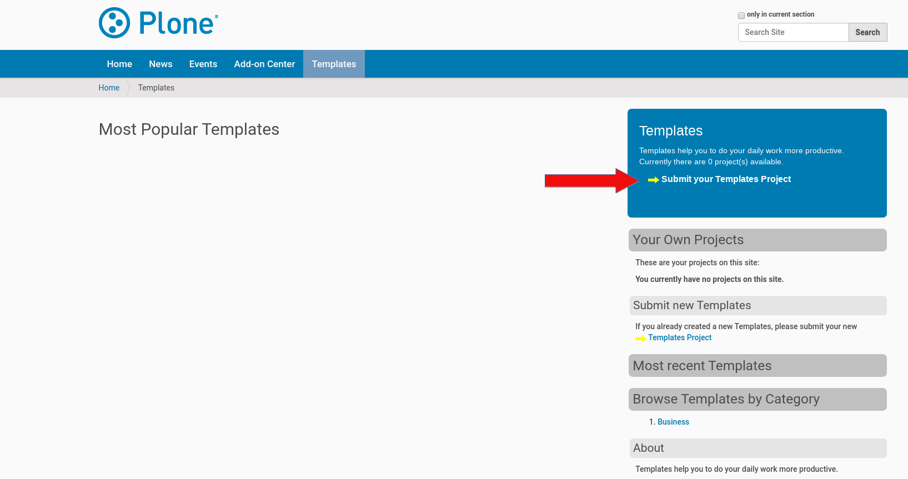
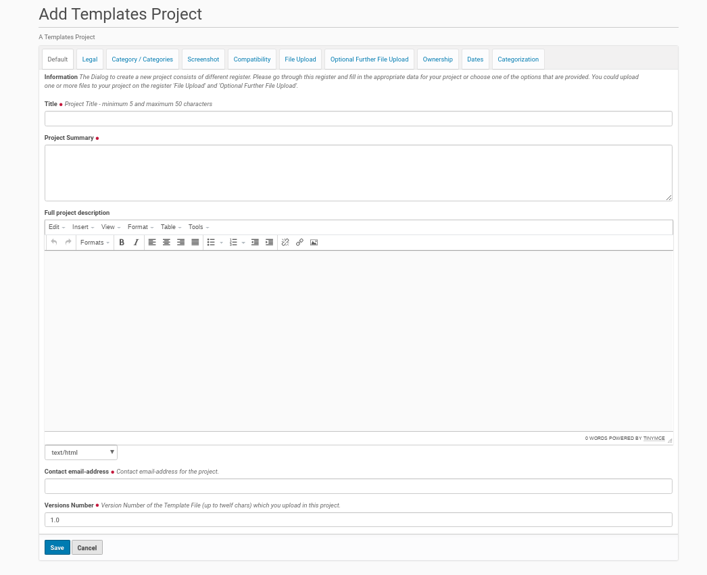
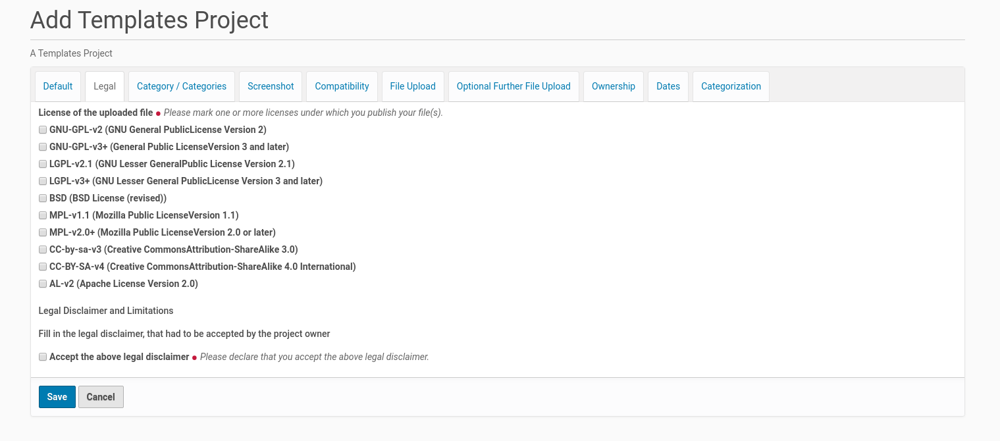
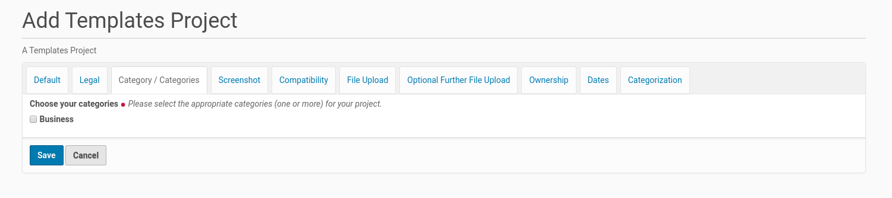
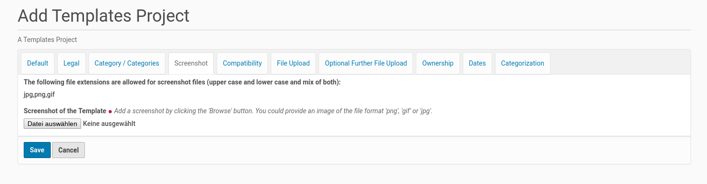
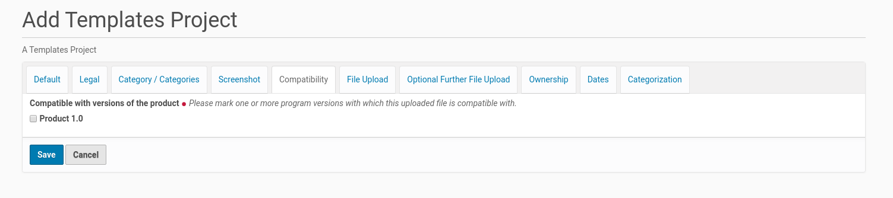
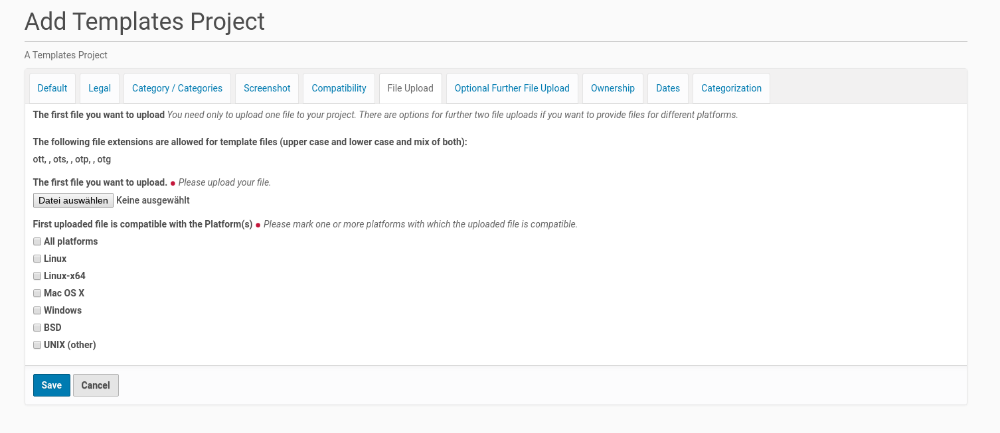

Add A New Template Project To The Template Center¶
A member of the Plone site (logged-in user) could add own template projects to the ‘Template Center’ once he called the appropriate form for new such projects and fill in the necessary data.
He has to click with the mouse first on the link in the box on the right side (see screenshot below).
{kind=link}
This mouse click opens the form for providing new templates. The form dialog consists of several register. The form fields in the first register asks for more general information about the project. It’s possible to edit and change the content of the fields later, if the focus or the features of the project varies.
The First Register ‘Default’¶
The new template project needs its own title with a length from 5 to 50 characters. This title has to be unique inside the ‘Template Center’. If there is already another template project with the same title the member will get an error message with the appropriate information. Thus he had to choose another title for his template project.
{kind=link}
A new project needs also a summary and could get a full description of its purpose and features. The latter one is optional (only form fields with a red point behind the title are mandatory).
It’s also necessary that the member provides an email-address. This address will be used to get in contact with the project (owner). The ‘Template Center’ sends e.g. messages if the status of the project changes (e.g. it was published by a reviewer). Users of the project / template could send feedback to the author within a form. The content of this form will be send by email to the project (owner) (The feedback provider will not see the email address of the project).
The last field contains the version number of the template project. The field starts with a value of ‘1.0’. But the project owner could change this value to the appropriate version number of the template file. The number ‘1.0’ means that the template file is ready for production. If this is not the case this version number should have a leading zero.
If the project owner replaces the template file(s) with a newer one, she / he have to change the value of the version field. But there is no reminder / error message yet for this task yet. It’s on her / his own responsibility not to forget to update the version number in that case.
The Second Register ‘Legal’¶
The Second register shows the necessary fields for the legal statements about the template project / files. It starts with the license for the template file(s). It is possible to check more than one license for a template filee(s). This declaration need to be in accordance with the license declaration inside the template file(s) (if there is one).
{kind=link}
There is also a read-only form field which contains the text of the legal disclaimer that has to be accepted by the template project owner. The text of the legal disclaimer will be set by the site admin inside the ‘Template Center’.
The Third Register ‘Category / Categories’¶
The template projects were assigned to one or more categories. The creator of the template project could choose on this register one or more categories, the new template project matches. The list of categories in this register had been created by the Plone site administrator within the ‘Template Center’.
{kind=link}
The Fourth Register ‘Screenshot’¶
This is the place to submit a project screenshot. This is mandatory.
The allowed file extensions are displayed next to the button to call the file dialog. The Plone site administrator choose this allowed file extensions within the ‘Template Center’.
{kind=link}
The Fifth Register ‘Compatibility’¶
This register contains a form field to choose the versions of the program the release is compatible with. The list of program versions will be created by the site admin within the ‘Template Center’. It is possible to choose multiple program versions for the template file(s) compatibility.
{kind=link}
The Sixth Register ‘File Upload’¶
This register is the place to upload the template file and declare which platform it is compatible with.
{kind=link}
If there are versions of the template file for different platforms (e.g. one for MS Windows and another one for Linux only) this further template files could be uploaded using the following register (‘Optional Further File Upload’).
The list of platforms in the listing below the the upload field will be created by the site admin inside the ‘Template Center’. She / he is able to expand this list at any time if desired.